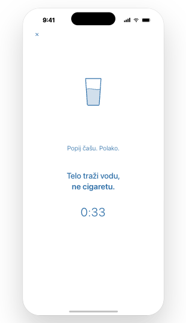
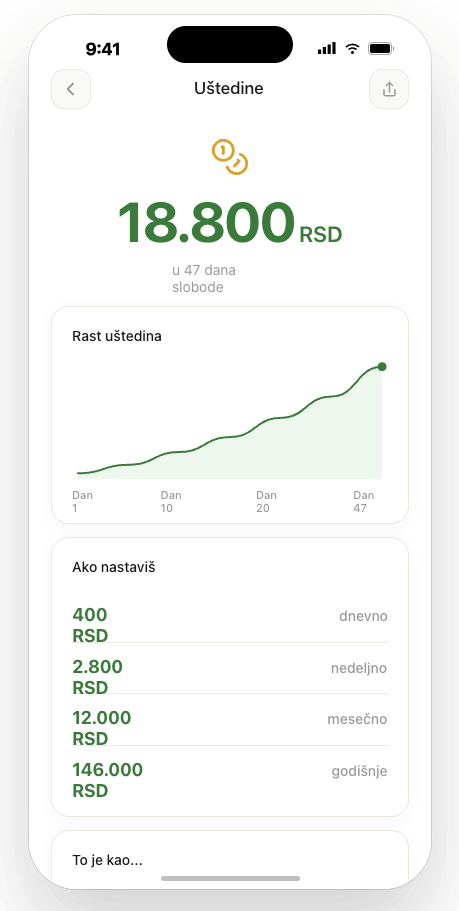
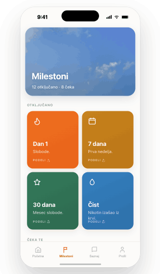
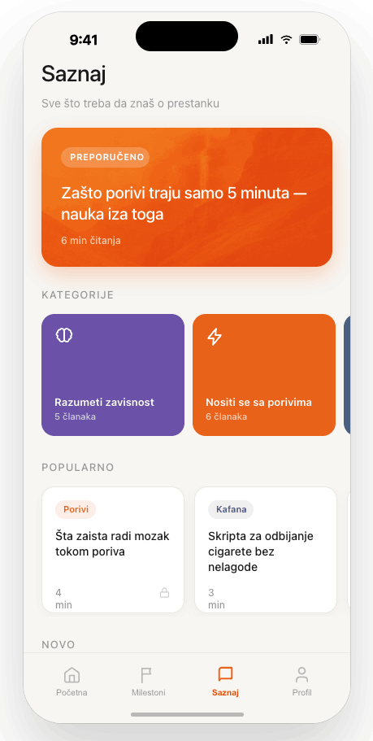
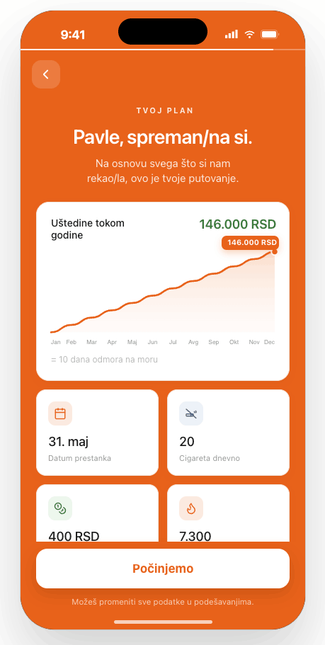

Telo
Šta se dešava u tvom telu prvih 48 sati bez nikotina
Pročitaj 4 min čitanja

Iskra ti pomaže baš u trenutku kada ti se zapali. Dan po dan, poriv po poriv, bez osuđivanja.
Pristup zasnovan na javno dostupnim smernicama i istraživanjima o prestanku pušenja
Institucije nisu povezane sa Iskrom. Koristimo javno dostupne smernice i istraživanja kao osnovu za edukativni pristup.
Nikotin nije jedini problem. Problem je jutarnja kafa, pauza na poslu, kafana, stres, dosada — i ona misao: „samo jednu“.
Većina ljudi ne padne zato što ne zna da treba da prestane. Padne kada poriv postane jači od plana. Iskra je napravljena baš za te trenutke.
Mislila sam da ne mogu. Iskra me drži kad je najteže.
Marija, 34 — beta korisnicaAko se makar u jednom od ovih prepoznaješ, na pravom si mestu.
Nije problem što si pao. Problem je što si svaki put ostao bez plana kad je postalo teško.
Kafa, pauza, kafana, stres, posle jela. Cigareta se retko pojavi sama od sebe.
Bez plašenja i moralizovanja. Samo konkretna pomoć kad ti se zapali.
Dani bez cigarete, novac i cigarete koje nisi zapalio — sve na jednom mestu.
Zato Iskra računa na male korake svaki dan, ne samo na motivaciju.
Šest alata koji te provedu kroz tih 3–5 minuta — disanje, voda, šetnja, tvoji razlozi.

Ušteđeni novac, odbijene cigarete i vraćeno vreme — sve raste pred tobom, svaki dan.

Pad je deo puta. Beležimo sve bez krivice i nežno te vraćamo tvojim razlozima.
Desetine zdravstvenih i ličnih ciljeva koji se otključavaju kako napreduješ.

Kratki tekstovi o navici, porivima i oporavku — jasno i na srpskom.

Kratak upitnik napravi plan baš za tvoje navike, troškove i lične razloge.

Kratak kviz upozna Iskru s tobom — šta te najviše vraća cigareti.
Pritisneš „Imam poriv“ i biraš alat koji te vodi kroz tih par minuta.
Dani bez cigarete, novac i cigarete koje nisi zapalio.
Dan 1. Prva nedelja. 30 dana. Male pobede koje mnogo znače kada ih vidiš svaki dan.
Pritisneš „Imam poriv“ i biraš šta ti tog trenutka pomaže. Svaki alat te vodi kroz tih 3–5 minuta dok poriv ne prođe.
Svaki poriv koji prebrodiš mozak pamti. Sledeći je malo lakši.
Iskra pretvara apstinenciju u nešto opipljivo. Što duže izdržiš, to više raste — i ti to vidiš svaki dan.
Projekcija za 20 cigareta dnevno po ceni od 400 RSD.
Kratki, jasni tekstovi o navici, porivima i oporavku — da znaš šta se dešava u tebi i zašto prolazi.
Toliko prosečan pušač u Srbiji može da potroši na cigarete za godinu dana. To je novac koji može da ostane tebi.
Hoću to nazadRačunica je okvirna i zavisi od broja cigareta i cene paklice.
Ostaviš email i rezervišeš mesto među prvima koji će dobiti pristup.
Prvi korak je kratak upitnik koji ti pokazuje šta te najviše vraća cigareti.
Javljamo ti se kada Iskra bude dostupna za prve korisnike u Srbiji — uz najpovoljniju početnu ponudu.
Brojanje dana je korisno, ali nije dovoljno. Problem se ne dešava kad mirno gledaš statistiku — dešava se kad dođe poriv, stres, kafa, društvo ili ona jedna misao: „samo jednu“.
Zna tvoje okidače i unapred te naoruža planom za trenutke u kojima obično popustiš.
Dobijaš alat od 3–5 minuta — disanje, vodu, šetnju — taman koliko traje poriv. I prođe.
Zabeležiš šta se desilo i nastaviš dalje. Bez osude — jer jedan trenutak ne poništava napredak.
Iskra uskoro ulazi u prvu beta verziju. Ljudi sa liste čekanja prvi dobijaju poziv, rani pristup i početnu ponudu pre javnog lansiranja.
Prvi dobijaš poziv kada beta bude spremna.
Early Access korisnici dobijaju najpovoljniji pristup.
Tvoje povratne informacije pomažu da Iskra bude bolja za ljude iz Srbije.
Pridruži se onima koji su rekli dosta — i počni svoju priču sa Iskrom, korak po korak.
Uđi na listuIskra je aplikacija koja pomaže kod odvikavanja od pušenja. Napravljena je za ljude kojima ne treba još jedno predavanje, nego konkretna podrška u trenutku kada im se stvarno zapali. Pratiš dane bez cigarete, novac koji ostaje kod tebe, cigarete koje nisi zapalio i okidače koji te najčešće vraćaju.
Očekujemo prvu beta verziju uskoro, a javno lansiranje nakon toga. Ljudi sa liste čekanja dobijaju pristup prvi.
Još nije javno dostupna. Trenutno primamo prijave za Early Access listu. App Store i Google Play verzije su u pripremi.
Cena još nije javno objavljena. Early Access korisnici će dobiti početnu ponudu pre javnog lansiranja.
Iskra je primarno napravljena za cigarete, ali mnogi principi važe i za IQOS i druge nikotinske navike. U prvoj verziji fokus je na cigaretama i najčešćim situacijama koje ljude vraćaju pušenju.
Onda ne krećeš od nule. Iskra nije napravljena da te kazni kad padneš. Napravljena je da ti pomogne da razumeš šta se desilo, zabeležiš okidač i nastaviš dalje.
Ne. Iskra nije zamena za lekara, terapiju ili medicinski tretman. Iskra je aplikacija za podršku, praćenje navika, edukaciju i pomoć u svakodnevnim trenucima kada ti se puši. Ako imaš ozbiljne zdravstvene probleme ili jaku nikotinsku zavisnost, najbolje je da se posavetuješ sa lekarom.
Da. Tvoj email koristimo za Early Access obaveštenja i tvoje rezultate ako uradiš kviz. Ne šaljemo spam i ne prodajemo tvoje podatke.